Mode d’emploi
Ce guide présente la configuration du module assainissement.
Définir les valeurs par défaut
Si le message suivant apparaît au démarrage du projet “Database production ready check”:
Avertissement
fk_provider or fk_dataowner not set in tww_od.default_values
Alors votre base de données n’est pas encore prête pour la production.
Il est possible de définir des valeurs par défaut pour des champs récurrents comme fk_provider ou fk_dataowner, ainsi il ne sera plus nécessaire de définir ces champs manuellement pour chaque objet créé.
Un groupe “configuration” est disponible dans le projet:
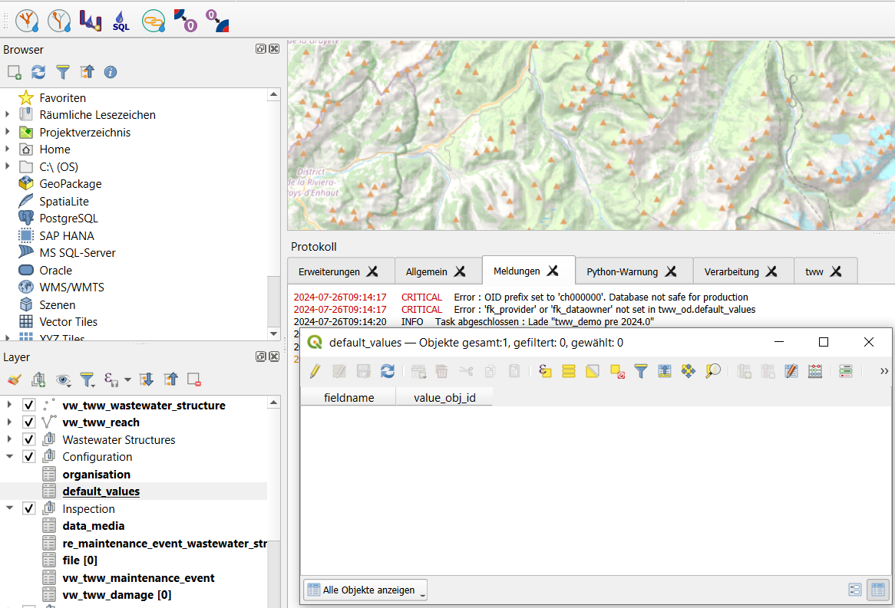
Ouvrir la table d’attributs “Valeurs par défaut”
Passer en mode édition et sélectionner un nouvel objet
Sélectionner le nom du champs (actuellement fk_dataowner et fk_provider sont supportés dans le formulaire)
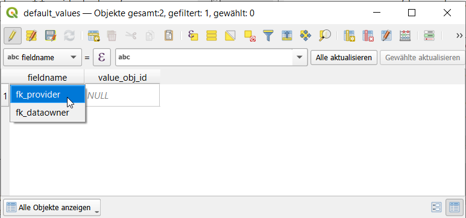
Sélectionner l’organisation qui devrait être utilisée (l’obj_id correspondant sera ajouté à la table).
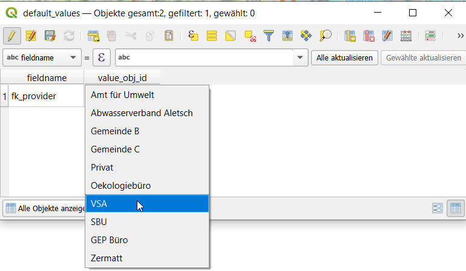
Note
If you do not have any organisations you first have to import them with the `Interlis Import chapter
<https://teksi.github.io/wastewater/admin-guide/interlis-io/index.html#interlis-import>`_
Pour le second avertissement, merci de contacter votre administrateur système.
Avertissement
CRITICAL: Error OID prefix set to “ch000000”. Database not safe for production.
et demander de définir le préfix qui convient pour votre projet.
Pour de plus amples informations, voir Prepare database for production
Connectez toutes les occurrences du nom de votre champ à tww_app.get_default_values(field_name). Par défaut, les champs fk_provider et fk_dataowner sont déjà connectés à la fonction tww_app.get_default_values(field_name).
Un exemple de script SQL montre comment installer les valeurs par défaut toutes les occurrences d’un même nom de champ ici)
Améliorer la vitesse des calculs et mettre à jour la symbologie et les étiquettes.
Le plugin TWW propose plusieurs commandes de menu permettant d’accélérer les calculs et de mettre à jour la symbologie et les étiquettes.
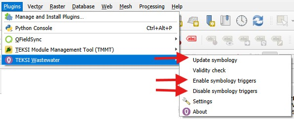
Sélectionnez Désactiver les déclencheurs de symbologie avant de commencer une modification multiple ou un calcul de champ impliquant la modification de nombreux enregistrements.
Sélectionnez Activer les déclencheurs de symbologie après les calculs ou les sessions de modification multiple. Si vous oubliez d’activer les déclencheurs de symbologie, TWW vous avertira au prochain démarrage du projet.
Lorsque les déclencheurs sont désactivés, les champs calculés ne sont pas mis à jour. Par exemple, les libellés d’entrée ou de sortie, ainsi que le champ _channel_function_hierarchic de la couche vw_tww_wastewater_structure, ne sont pas recalculés. Pour recalculer tous ces champs, sélectionnez Mettre à jour la symbologie dans le menu du plugin TWW.
Working with labels
Comment fonctionnent les labels de la couche vw_tww_wastewater_structure
L’étiquetage d’un regard avec ses niveaux est un processus assez complexe. Les niveaux ne sont pas stockés directement dans la classe wastewater_structure, mais dans la table cover, ainsi que sous forme de niveaux de points de tronçon « reachpoint levels » associés aux tronçons connectés. C’est pourquoi TWW dispose de 4 champs calculés permettant d’étiqueter ces niveaux :
_cover_label: shows the level / the levels of the cover/s.level of the wastewater structure
_bottom_label : affiche le niveau / les niveaux du champ bottom_level des wastewater_node(s) de la structure d’assainissement.
_input_label: shows the levels of the reachpoints connected as to_reachpoints to one of the wastewater_nodes of the wastewater_structure
_output_label : affiche les niveaux des points de tronçon « reachpoints » connectés en tant que from_reachpoints à l’un des wastewater_nodes de la structure d’assainissement.
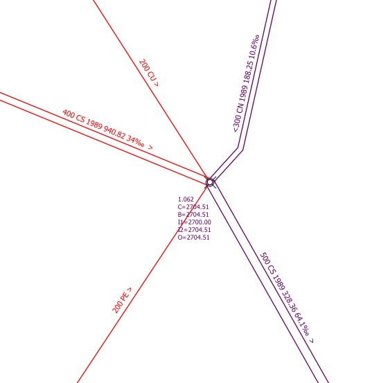
Dans cet exemple, il y a 4 tronçons entrants « input reaches » raccordés au regard, mais seulement deux étiquettes d’entrée (I1, I2). Pourquoi ?
Réponse : Dans la fonction qui calcule le champ _input_label, il est possible de définir un filtre afin que seuls les tronçons ayant une valeur spécifique de function_hierarchic (par exemple uniquement les tronçons pwwf) soient étiquetés. Ce filtrage s’appuie sur un champ spécifique de la table vl_channel_function_hierarchic (la documentation suit).
Which reach is I1, which is I2?
Réponse : TWW utilise l’azimut du dernier segment du tronçon (pour les entrées) ou du premier segment du tronçon (pour les sorties) afin de définir l’ordre des étiquettes.
Indication
Cette méthode de numérotation des tronçons diffère de celle de QGEP, où la direction nord constituait le point de départ.
Traduction des préfixes d’étiquettes (C, B, I, O)
Afin de faciliter la traduction des préfixes d’étiquettes, une série de variables de projet QGIS a été ajoutée. Si vous souhaitez modifier les préfixes pour le niveau du couvercle, le niveau de fond ainsi que les niveaux d’entrée et de sortie, modifiez les paramètres de projet suivants :
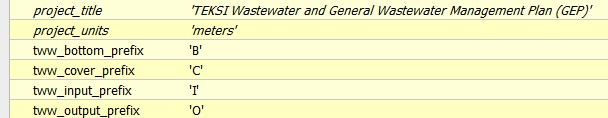
Pour voir vos modifications, vous devez sélectionner « Mettre à jour la symbologie » dans le menu du plugin TWW.
Positionnement manuel des étiquettes selon l’échelle
La définition des étiquettes dans QGIS permet de gérer des étiquettes différentes selon l’échelle. Cela fonctionne très bien pour un travail à l’écran. En revanche, lorsqu’il s’agit d’imprimer des plans avec des étiquettes ou d’exporter des étiquettes pour l’échange de données (par exemple avec la plateforme RegioGIS), il est souvent nécessaire de définir manuellement la position des étiquettes. Lorsqu’une étiquette est positionnée manuellement dans QGIS, cette position fixe s’applique à toutes les échelles, ce qui ne donne pas toujours un résultat satisfaisant.
Solution
Étendre le fichier de stockage auxiliaire avec de nouveaux champs pour différentes positions d’étiquettes
Use Rule-based labeling, then you can define different labelpositions for every rule
Dans l’exemple ci-dessous, nous souhaitons étiqueter les structures d’assainissement avec une étiquette détaillée pour le plan de réseau (1:500) et pour la carte de synthèse (1:2000). Dans le stockage auxiliaire, nous utilisons les champs standards PositionX et PositionY pour les étiquettes du plan de réseau. Pour les étiquettes de la carte de synthèse, nous ajoutons deux nouveaux champs, nommés posx2000 et posy2000.
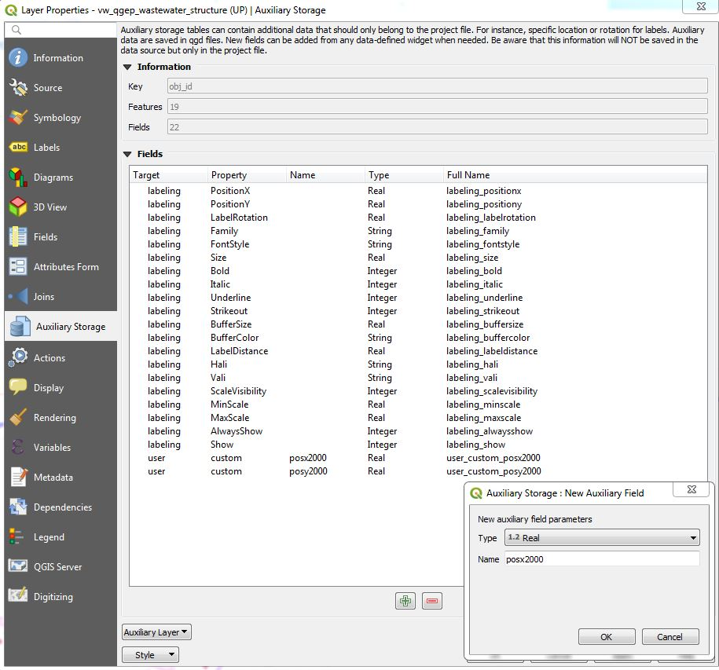
Définissez maintenant un étiquetage basé sur des règles avec deux règles. Dans l’exemple, la première règle s’appelle WP-Labels (WP = Werkplan = plan de réseau). Vous n’avez rien à modifier au niveau du positionnement, car cette règle utilise les champs de positionnement standards.
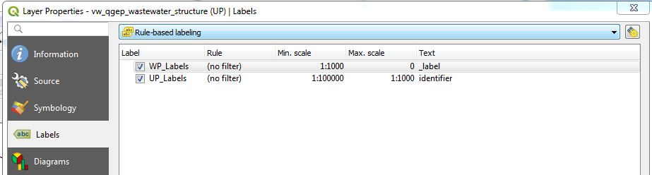
The second rule is called UP-Labels (UP = Uebersichtsplan = overviewmap). In this rule, you have to change the coordinate fields in the placement-tab.
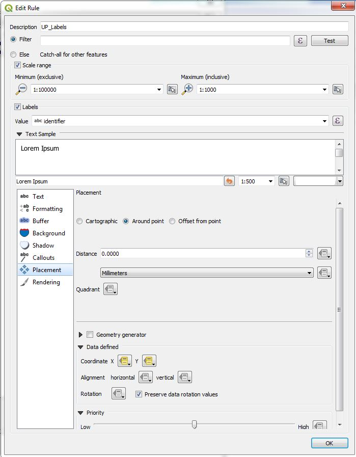
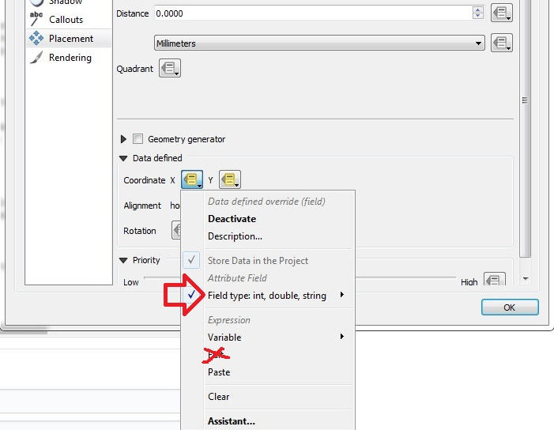
Click on Coordinate X menutool and choose in the field type-menu the auxiliary_storage_user_custom_posx2000 field. Then the similar for Y.
Attention
Do not use the Edit… menu for defining the coordinate-field. If you use a formula or choose the field via the Edit… menu, QGIS will overwrite the definition everytime you do a manual positioning.
Now you can move or fix your labels for every rule with different positions with the QGIS Moves a Label or Diagram-Tool.
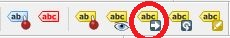
Attention
Vos modifications ne sont enregistrées que si vous enregistrez le projet QGIS !
Comment importer des positions d’étiquettes existantes
Good label-positions can be hard work. So you don’t want to loose it.
Exportez vos positions d’étiquettes depuis votre ancien système sous la forme obj_id, coordonnée X (Est), coordonnée Y (Nord).
Ajoutez le fichier .qgd de votre projet à l’aide de Ajouter une couche vectorielle… dans votre projet, puis ouvrez la table attributaire.
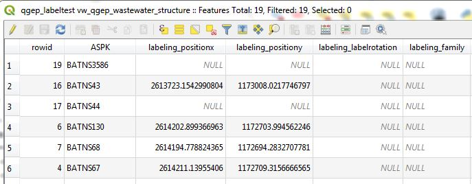
Si vous ne trouvez pas de fichier .qgd, c’est probablement parce que vous n’avez encore jamais déplacé ou fait pivoter une étiquette.
Modifiez les noms des champs de vos données exportées afin qu’ils correspondent aux noms des champs du fichier .qgd. Dans l’exemple, le champ obj_id doit être nommé ASPK, et les champs de coordonnées doivent s’appeler labeling_positionx et labeling_positiony.
Ouvrez le fichier exporté dans le projet QGIS et copiez les lignes souhaitées dans la table du fichier .qgd (ce fichier doit être modifiable).
Enregistrez le fichier .qgd et retirez‑le de votre projet avant de supprimer les étiquettes, car QGIS ne peut pas enregistrer les positions d’étiquettes manuelles si le fichier .qgd est présent comme couche dans le projet.
Si nécessaire, définissez l’alignement horizontal et vertical de vos coordonnées d’étiquettes dans les paramètres de positionnement de la définition des étiquettes.
Modélisation hydraulique
Collecte d’une géométrie hydr_geometry (correspond à une géométrie de bassin dans Mike+)
Note:
Wastewater structures with a hydr_geometry have to be defined as special structures (and not as standard manholes).
La géométrie détaillée peut être dessinée graphiquement à l’aide de l’action Numériser.
Action:
Sélectionnez, dans la couche vw_tww_wastewater_structure, la structure d’assainissement à l’aide du bouton i « outil d’identification ».
Sélectionnez l’onglet Wastewater Nodes dans la fenêtre des attributs de l’entité.
Ou de manière plus directe : sélectionnez le nœud à l’aide du bouton i dans la couche vw_wastewater_node.
Développez la section Additional attributes in special structures.
Sélectionnez une hydr_geometry dans le champ fk_hydr_geometry ou utilisez le bouton + pour créer une nouvelle hydr_geometry.
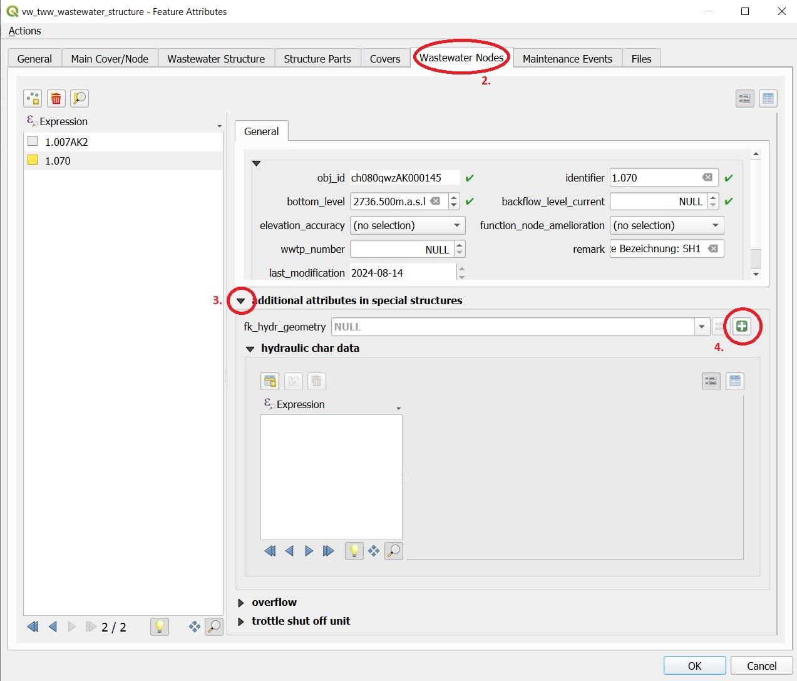
Pour un nouvel enregistrement : saisissez une description dans la fenêtre des attributs de l’entité hydr_geometry. Ce nom correspond également au nom de la table dans Mike+.
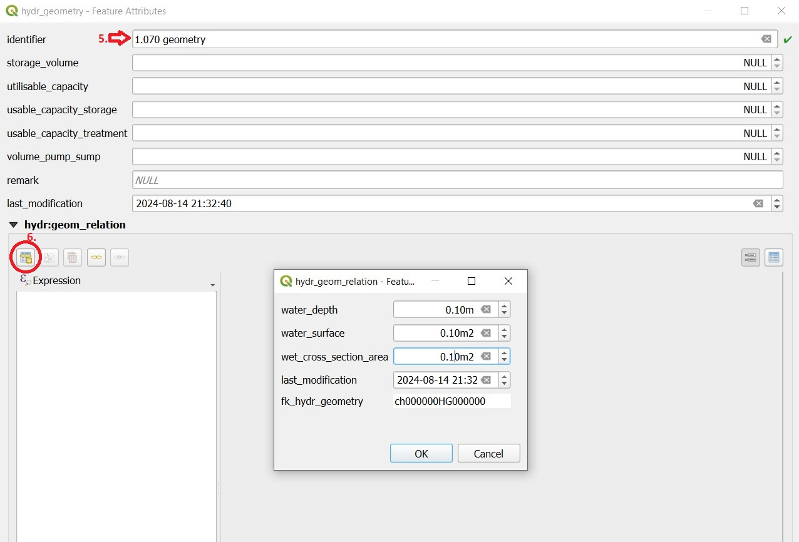
À l’aide du bouton Ajouter un objet enfant, vous pouvez désormais générer les enregistrements servant à définir la hydr_geometry, de manière analogue à la géométrie de bassin dans Mike+ (H, As : surface, Ac : aire de section transversale).
In the table view, the overview of the values is easier.
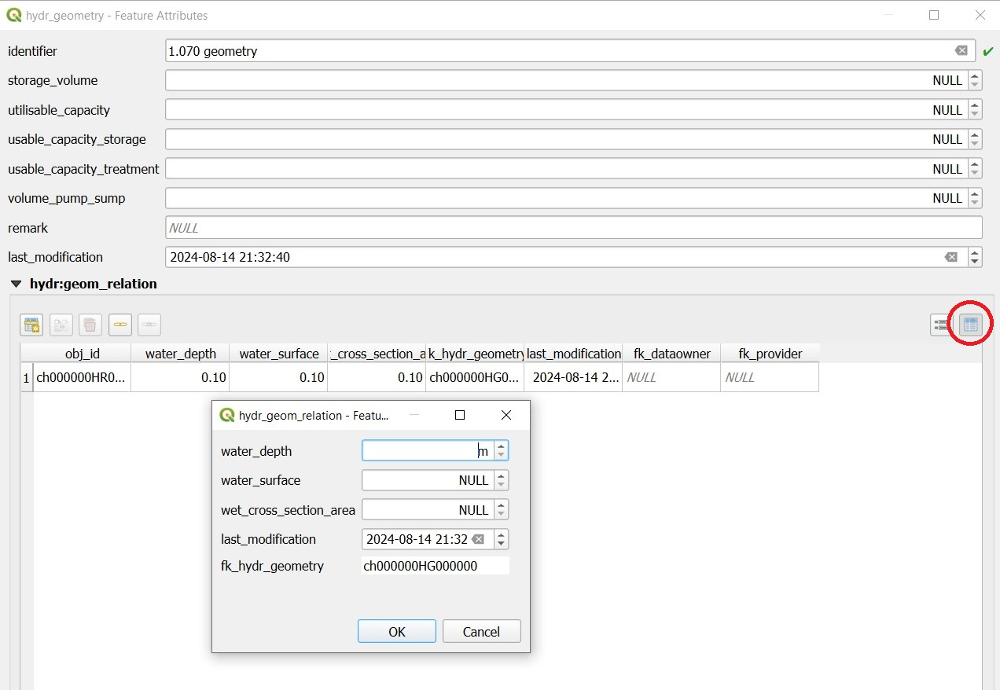
Note:
La hauteur d’eau correspond à la valeur mesurée au‑dessus du niveau de fond ou du niveau de sortie. Une hydr_geometry peut ainsi être utilisée pour plusieurs structures d’assainissement si celles‑ci présentent une construction similaire.
Veillez à respecter les règles définies dans Mike (par exemple une augmentation continue de l’aire de section transversale).
Tant que l’enregistrement hydr_geometry n’est pas enregistré, seule la valeur Obj_Id apparaît entre parenthèses dans la fenêtre des attributs de l’entité. Après l’enregistrement, l’identifiant que vous avez saisi est affiché.
Modélisation hydraulique d’un déversoir (déversoir frontal / déversoir à saut / pompe)
Il existe une vue spécifique pour les déversoirs, même s’il serait également possible de modifier les données de déversoir directement dans la couche vw_tww_wastewater_structure. L’avantage de la couche vw_tww_overflow est que les déversoirs peuvent être visualisés, facilement retrouvés et qu’ils sont disponibles dans des listes.
Action:
Si ce n’est pas déjà fait : dans le cas des déversoirs, un second nœud d’assainissement doit être créé dans la structure de wastewater. Une deuxième sortie a déjà été créée (en vert : eaux usées mixtes déversées) et n’est pas encore reliée à un nœud d’assainissement dans la structure de déversoir.
Sélectionnez la structure de wastewater à l’aide du bouton i.
Sélectionnez l’onglet Wastewater Nodes dans la fenêtre des attributs de l’entité.
Créez un second nœud d’assainissement à l’aide du bouton Ajouter un objet enfant de type point. La note bleu clair en haut de la carte vous indique la marche à suivre !
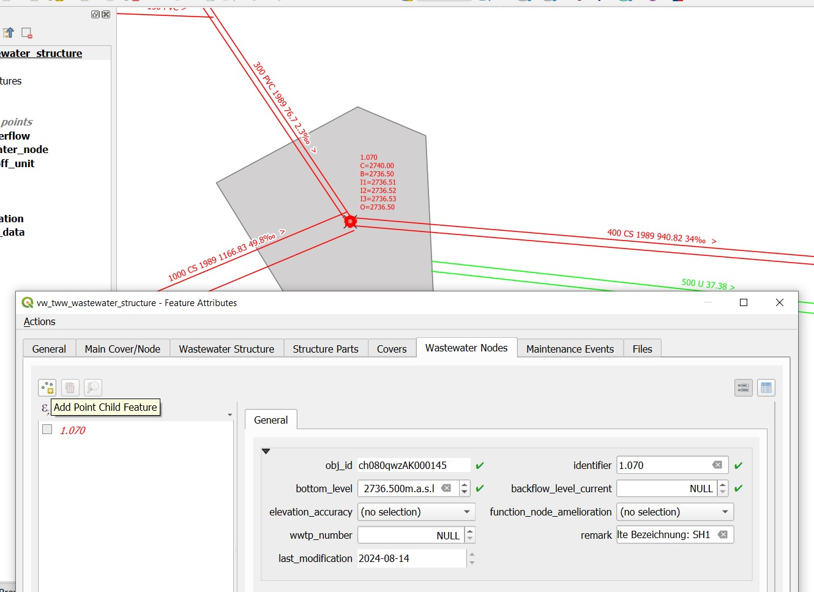
Cliquez à côté de la sortie 2 pour placer le second nœud d’assainissement.
La fenêtre des attributs de l’entité pour ce nœud d’assainissement s’ouvre. Saisissez un identifiant explicite (par exemple : 1.070-WN2 pour le nœud d’assainissement 2 de la structure spéciale 1.070). Cette désignation apparaît également dans Mike+. Le nouveau nœud d’assainissement est ensuite enregistré en cliquant sur OK.
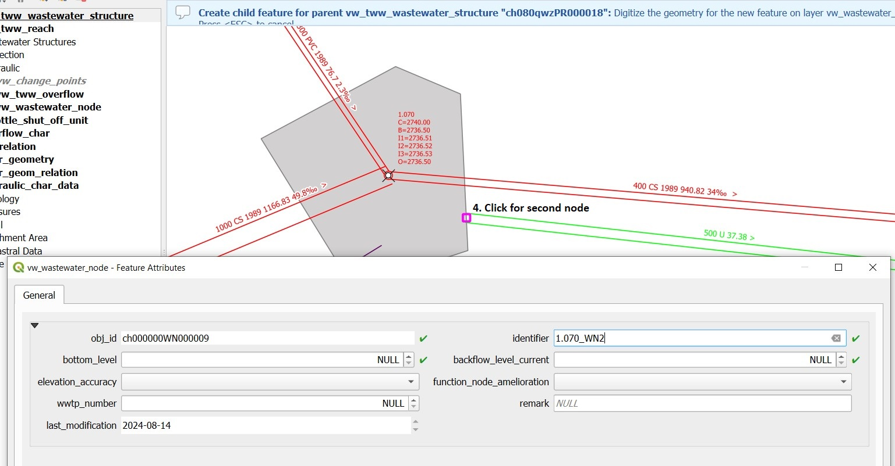
Fermez la fenêtre des attributs de l’entité de la structure de wastewater.
Pour définir un nouveau déversoir frontal :
Choisissez la couche vw_tww_overflow dans le groupe de couches Hydraulic.
Sélectionnez le bouton QGIS standard Ajouter une entité ponctuelle et cliquez n’importe où à proximité de la structure de wastewater.
Indication
Comme un déversoir ne possède pas de géométrie propre, l’emplacement du clic n’a aucune importance. La géométrie est définie par les nœuds de wastewater reliés en amont (from) et en aval (to), voir le point 9.
La fenêtre des attributs de l’entité du déversoir s’ouvre.
Enter an identifier and choose the overflow_type.
Définissez les deux nœuds de wastewater du déversoir (fk_wastewater_node = nœud amont, fk_overflow_to = nœud aval) en les sélectionnant sur la carte à l’aide de l’outil Identification sur la carte.
Les attributs de la section hydraulique supérieure doivent être renseignés ; ils seront transférés vers Mike+.
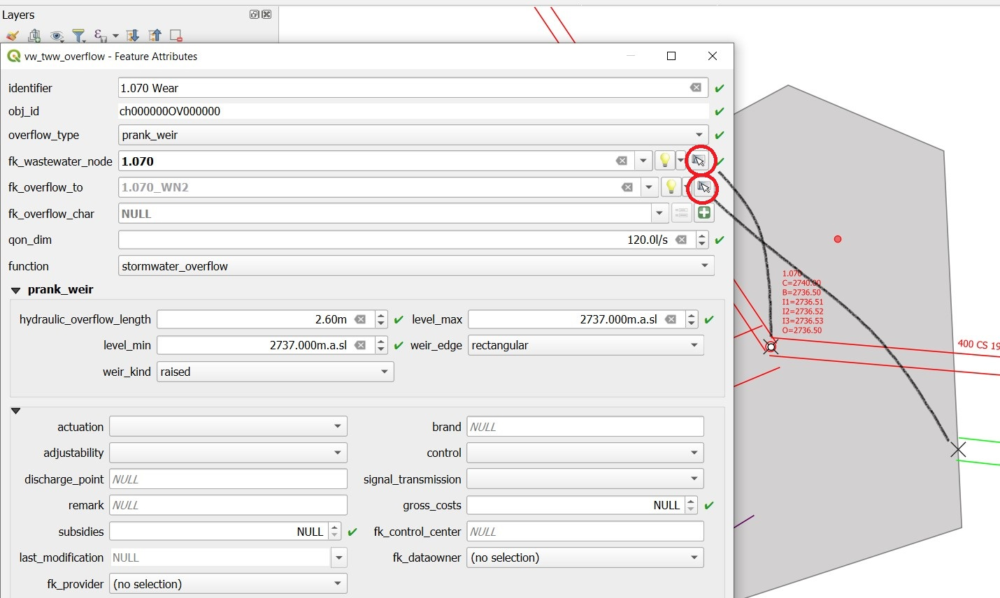
Fermez toutes les fenêtres des attributs de l’entité ouvertes.
Indication
Le nouveau déversoir est représenté par une ligne en pointillés avec une flèche. Si la ligne n’apparaît pas, cela signifie qu’elle est définie à l’aide d’un symbole de type générateur de géométrie dans QGIS. Vérifiez la formule du générateur de géométrie (propriétés de la couche → symbologie, puis sélection du symbole). Vérifiez d’abord le nom de la couche vw_wastewater_node. Si cette couche a été renommée, la formule doit être adaptée avec le nouveau nom (par exemple vw_Abwasserknoten).
Pour terminer, la deuxième sortie doit être reliée au deuxième nœud de wastewater :
Select the TWW tool Connect wastewater networkelements.
Cliquez sur le tronçon « reach » à proximité de la sortie.
Cliquez sur le nœud de wastewater.
Confirmez que la connexion est créée pour le from reach point.
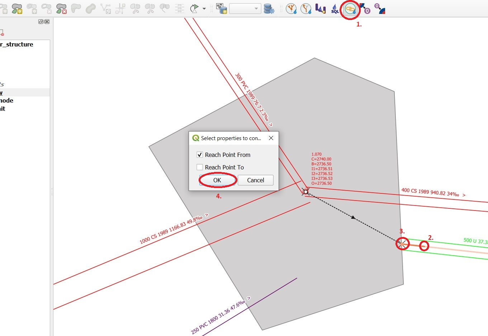
Caractéristiques du déversoir
Dans le cas d’un déversoir à saut, d’une pompe ou dans des conditions particulières, une caractéristique de déversoir peut être définie pour le déversoir :
Vous pouvez sélectionner une caractéristique existante dans le champ fk_overflow_char ou créer une nouvelle caractéristique à l’aide du bouton vert +.
La fenêtre des attributs de l’entité pour la caractéristique de déversoir s’ouvre :
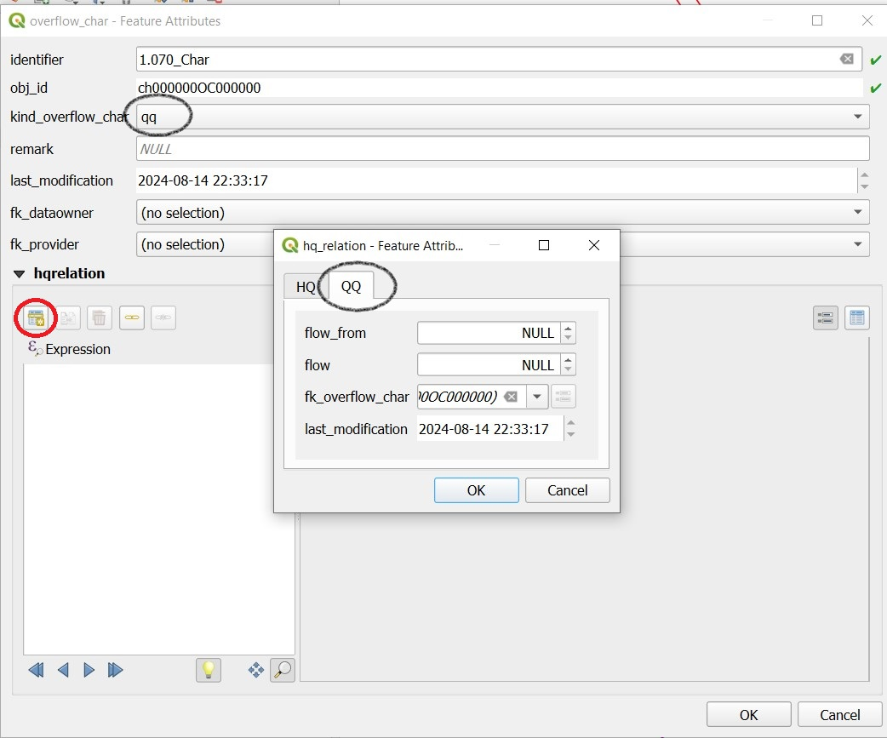
Ici aussi, l’identifiant est repris ultérieurement dans Mike+ comme nom de table pour une relation QH, laquelle est utilisée par exemple dans un régulateur local.
Définissez les valeurs HQ ou QQ nécessaires à l’aide du bouton Ajouter un objet enfant. Veillez à sélectionner l’onglet correct correspondant au choix effectué dans kind_overflow_char.
Informations complémentaires
Vous trouverez d’autres questions‑réponses dans la section de discussion TWW : TWW Discussion section.